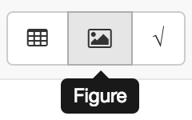
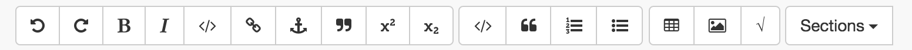
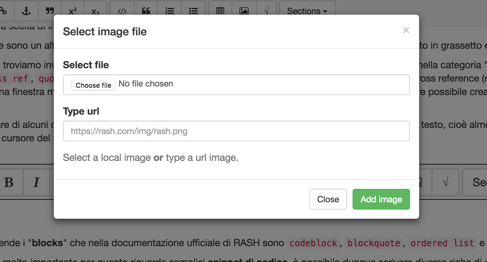

Introduzione, riassunto chiaro della tesi a tutti i livelli
Qui mi metto a descrivere a grandi linee il dominio in cui ho operato, gli attori della comunità scientifica, editor WYSIWYG(msWord ecc), formati (latex,html), formati di pubblicazione(?) (pdf, springer LNCS)
Descrizione di come funziona il workflow per la pubblicazione e delle due macrofasi : sottomissione ad un comitato e sottomissione ad un editore
Gli utenti usano un editor, ed ognuno ha il suo formato : LaTeX, DOC(X), ODT, DocBook, TEI e HTML ma successivamente serve convertire l'articolo in PDF, in alcuni casi anche EPUB
Invio dell'articolo all'editore in entrambi i formati (pdf e sorgente), creando un nuovo PDF.
Una descrizione approfondita dello html publishing, grosso escursus sulle novità lanciate da questa modalità di pubblicazione in particolare formato RASH. Pros and cons, brief story, estensione e grandezze.
Problema principale è che non è utilizzato per via degli standard de facto
Teoria sugli editor, descrizione dei più comuni e, se è possibile, aggiungere informazioni sulle percentuali di utilizzo rapportate alla popolazione scientifica.
Distinzione delle varie tipologie di editor e in particolare dei loro formati.
Descrizione del formato pdf, in particolare tutti i contro : accessibilità limitata, non compatibile con github, lenta renderizzazione, online issues .
Attenzione particolare a questo formato, informazioni
Particolare focus sugli editor di tipo What You See Is What You Get, fondamenti teorici e teoremi.
lista dei competitors: (Dokieli format, Fidus writer format, HTML books, ecc.) e degli editor WYSIYG (dokie.li, fiduswriter, authorea, tinyMCE) descrizione, pros and cons, accennare l'utilizzo di github nella differenza tra centralizzati e decentralizzati.
Descrizione di RASH e framework, motivi utilizzo, estensione, soggetti e oggetti, pros and cons. Sotto insieme di html5
Scrivere riguardo alla visualizzazione di documenti rash, jquery e css
Descrizione di rocs e del suo utilizzo per convertire i documenti, parlare della tesi di Giacomo.
Punti di forza sull'accessibilità del documento, in particolare le formule. Riprendere dalla tesi di Vincenzo.
Gran parte di questa tesi è centrata sullo sviluppo di un editor HTML-based chiamato RAJE (RAsh Javascript Editor), che non è altri che un editor WYSIWYG (di questo tipo di editor si è discusso ampiamente nella ). Il formato su cui è basato è sì, HTML ma per la precisione utilizza un sotto insieme di elementi HTML, conosciuti con il nome di RASH ( ).
In questa sezione spiegherò cos'è RAJE e le funzionalità concesse all'utente, successivamente descriverò il grado di compatibilità (ad ora versione 0.0.1) che ha con il formato RASH, esaltando i suoi punti di forza che sono inoltre il motivo per cui è stato creato.
Tra le principali funzionalità che RAJE mette a disposizione, ne troviamo alcune ovvie e necessarie in un editor (vedi toolbar).
Come anticipato RAJE è un editor HTML-based di tipo WYSIWYG, perciò esattamente come altri editor di questo tipo possiede una toolbar. Per quanto riguarda questo importante componente, nella fase iniziale dello sviluppo, ho optato per uno stile minimale, riprendendo le guidelines grafiche di Bootstrap. Successivamente sarà mio compito rendere la toolbar molto più simile agli editor più famosi e commerciali.
In questa sezione il mio scopo è di dare una descrizione della toolbar con annessi screenshots.
Questa toolbar è composta da un insieme di bottoni raggruppati e divisi per categoria, seguendo le specifiche RASH è possibile notare la differenza tra le diverse categorie di elemento o azione che verrebbero applicate al documento, una volta che l'utente preme il corrispondente bottone. E' inoltre possibile evocare un tooltip che mostra il nome comune per riconoscere il bottone come visto in .

figure.In rifermento alla e partendo da sinistra verso destra troviamo i primi due bottoni: rispettivamente undo e redo. Il comportamento nascosto dietro questi speciali pulsanti è uno dei più importanti per quanto riguarda la stesura di un documento. Non avendo essi a disposizione sarebbe molto più complesso redigere l'articolo, quindi la scelta di introdurre queste preziose funzionalità è stata quasi obbligata.
Il terzo e il quarto pulsante sono un altro grande classico dgli editor, cioè bold e italic. Possono rendere un testo selezionato in grassetto e in corsivo.
Dal quarto pulsante in poi troviamo invece dei comportamenti speciali che riguardano esclusivamente RASH, ma sempre nella categoria "inline", che sono: code, link, cross ref, quote, subscript e superscript . Tra i vari, degno di nota è quello relativo alle cross reference (raffigurato con l'icona dell'ancora) che mostra una finestra modale con cui poter scegliere esattamente a quale elemento referenziarsi, ed è inoltre possibile creare una nuova reference o footnote.
Il funzionamento particolare di alcuni di questi pulsanti permette il loro utilizzo solo se è presente una selezione estesa del testo, cioè almeno un carattere selezionato trascinando il cursore del mouse e tenendo premuto il tasto sinistro. Per esempio selezionando del testo.

figure.Il secondo gruppo comprende i "blocks" che nella documentazione ufficiale di RASH sono codeblock, blockquote, ordered list e unordered list.
L'elemento codeblock è molto importante per quanto riguarda semplici snippet di codice, è possibile dunque scrivere diverse righe di codice (anche in formato HTML) senza che esse vengano interpretate e mostrate come se fosse una pagina web, in altre parole tutto ciò che si trova compreso tra l'apertura e la chiusura del tag code è codice solo graficamente, ma è testo a tutti gli effetti.
Per quanto riguarda le citazioni, ci viene in aiuto il pulsante relativo all'elemento blockquote. E' possibile aggiungere una citazione che, diversamente al normale quote (che crea una citazione inline), si estende completamente per una riga. Citazioni di questo tipo sono molto importanti, anche per dare maggiore enfasi rispetto alle semplici citazioni inserite nel testo.
E' accettabile e quasi scontato decidere di voler inserire delle liste all'interno dell'articolo che si sta scrivendo, a questo proposito all'utente vengono in aiuto i pulsati delle liste. Quelle più utilizzate e popolari sono naturalmente quelle ordinate e non ordinate e possono essere utilizzati in contesti diversi, è necessario dare la possibilità ad ogni utente di poter inserire la lista che più è in linea con le sue volontà.
Tra i bottoni del blocco denominato "figure" troviamo table, figure e formule. Sempre seguendo le indicazioni scritte nella documentazione ufficiale di RASH si nota l'importanza dell'utilizzo di questi tra blocchi (considerati tra i principali per la scrittura di un articolo di ricerca).
Le tabelle vengono inserite insieme ad un piccolo bottone di configurazione, posizionato alla loro sinistra. E' modificare la tabella grazie a questo pulsante e, tra le opzioni permesse troviamo la possibilità di ridimensionarla e di cambiare l'organizzazione della testata. Un'altra funzionalità molto importante, permessa da RASH ma non ancora implementata con RAJE (dei motivi ne parlerò maggiormente nella section 3.2.), è l'espansione delle celle o dell'intera colonna. Sarà una delle prime funzionalità che verranno implementate nelle release successive dell'editor.
L'inserimento, tramite il corrispondente bottone, delle immagini è affidato al secondo bottone del blocco: figure. Alla pressione sarà immediatamente visibile una finestra modale ( ) che permette di scegliere tra due modalità distinte di inserimento: da selezione di un file di immagine o dall'inserimento di un URL. Entrambi importano fisicamente l'immagine all'interno della cartella del progetto.

figure.descrizione della compatibilità che ha con rash
Descrizione dei problemi principali che si sono creati durante la creazione di un editor WYSIWYG con un sotto insieme di elementi HTML
Editor di formule in mathjax e collegamento github
Descrizione di cosa sono, come funzionano e come si integrano con il progetto e rash
Cos'è Github, come funziona e come si integra con il progetto
Descrizione tecnica di raje, requisiti, tecnologie su cui è basato
Descrizione del comportamento che ha raje come software, delle librerie usate e come è stato possibile comunicare trarendereremainprocess
Come sono state gestite queste api per creare le directory e i file
Come sono state gestite queste api (octonode library)
Descrivere la comunicazione tra i processi di rendering e main
Descrizione della parte html based, il software è generato partendo da tecnologia web based quindi js css e html.
Descrizione dello script che gestisce l'editor vero e proprio come toolbar, derash functions.
descrizione della tecnologia utilizzata, contenteditable e degli errori che sono saltati fuori,soprattutto perchè prima si voleva fare un sistema diverso e non software, quindi ci sarebbero stati problemi dicompatibilità (soprattutto firefox e chrome)
Da scrivere anche il problema del non rompere la funzionalità di undo/redo di default, quindi di"tradurre"alcunielementiper farli fittare con rash
Problema del caret e dell'utilizzo di caratteri speciali zero_space per gestire l'inserimento di html.
usata per astrarre la definizione di range, accedere al caret e selezioni, sub-modulo saveselection.js
Descrizione di questa libreria e quali shortcuts sono state usate
Descrizione di come viene effettuato il deploy, in particolare la compatibilità e le issues (per esempio linux richiede che ci sia anche la mail dell'authore).
La libreria electron-builder trovata direttamente da Electron ROCKS.
Per fare il deploy del software per sistemi windows, utilizzando un mac ho dovuto installare wine e le librerie mono
Descrizione del tipo di test di cui andò a parlare (task based), e dell'obiettivo che è cogliere l'usabilità
Descrizione di come sono stati formati i test, 3 blocchi, quali erano i task
Ogni tipo di informazione raccolta riguardo agli utenti che hanno effettuato il test (sia quelli che scrivono sia quelli che posso acquisire come informazioni sulle macchine utilizzate)
Discussione dei risultati che sono stato ottenuti, sus (system usability scale) rapportato ad altri risultati
Sotto sezione basata sulle risposte ricevute dall'ultimo blocco del test, in particolare per quanto riguarda le informazioni che possono servire per redigere i test successivi su larga scala
In questa sezione scrivo riguardo alle issues che ho trovato e ho modificato durante la stesura della tesi, poichè ho scritto il tutto con questo editor.
Conclusioni, aggiungere lo sviluppo dell'articolo scientifico successivamente
Descrizioni sugli sviluppi futuri: Annotazioni, visualizzazione del TOC, possibilità di gestire peer review e conferenze
Using PDF files. (2009) http://www.siamcomm.com/website-design/using-pdf-files-pros-and-cons/
Peroni, S. (2017). RASH: Research Articles in Simplified HTMLhttps://rawgit.com/essepuntato/rash/master/documentation/index.html